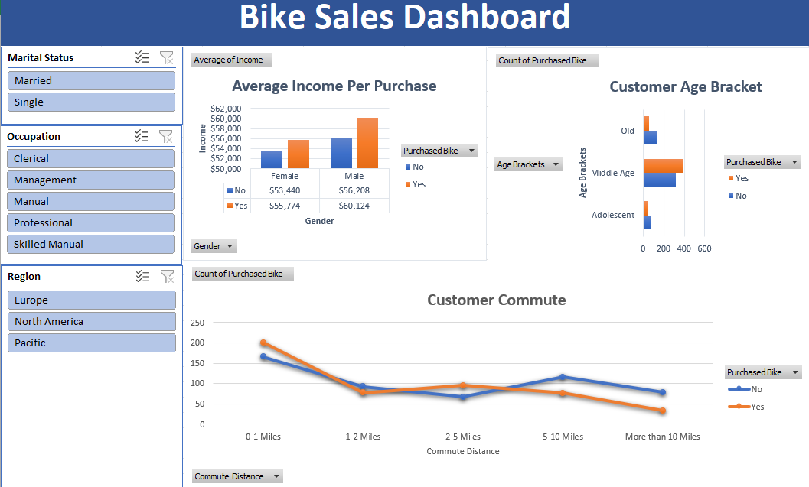

Sales Report Analysis
Project Overview
This project showcases end-to-end data analysis within Microsoft Excel, applied to a bike buyers dataset. I managed the entire workflow, including data cleaning, applying formulas for categorization, leveraging Pivot Tables for exploration, and designing a dashboard to communicate key purchasing drivers effectively. Here is a breakdown of the process/actions taken:
- Used the "bike_buyers" sheet, which contains customer details such as marital status, gender, income, education, occupation, homeownership, number of cars, commute distance, region, age, and whether they purchased a bike.
Collected and Imported Data
- Ensured there were no missing or incorrect values in key columns.
- Standardized data formatting (e.g., numerical consistency, categorical values).
- Added a new "Age Brackets" column in the "Worksheet" sheet to categorize customers into different age groups for easier analysis.
Cleaned and Processed the Data
- Bike purchases based on income levels.
- The relationship between customer age brackets and purchase likelihood.
- How commute distance correlates with bike ownership.
Performed Data Analysis with Pivot Tables
Used pivot tables to summarize key trends, such as:
- Designed a "Dashboard" sheet to present key findings in a clear and visually appealing format.
- Included charts or graphs to highlight trends in bike purchases.
Created a Dashboard for Visualization
Key Analysis and Actionable Insights:
Our analysis of the Bike Sales Dashboard reveals critical insights to guide business strategy. The data confirms that middle-aged customers constitute our core purchasing demographic, necessitating a focus of marketing and product development efforts on this segment.
Furthermore, the observed correlation between higher average income and bike purchases informs our pricing strategy and supports targeted advertising initiatives. We also note a prevalence of customers with short commutes (<1 mile), suggesting an opportunity to emphasize bikes for local convenience in our marketing and potentially optimize inventory towards city and commuter models. These findings, combined with the dashboard's capacity for more granular segmentation by region and occupation, allow for increasingly refined and data-driven strategic approaches.
Tools & Technologies
- Microsoft Excel
- Kaggle(dataset)